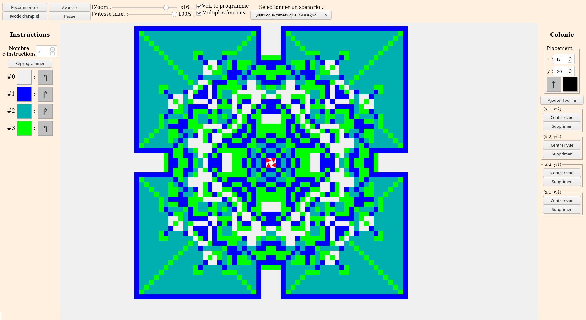
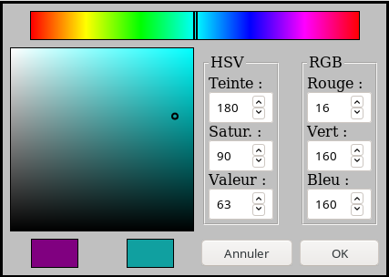

La Colonie de Langton est une application web conçue pour le Palais de la découverte, qui permet d'expérimenter avec diverses variantes de la fourmi de Langton.
L'application permet de simuler le comportement d'une fourmi virtuelle, d'observer les motifs qu'elle trace, de modifier ses instructions et les couleurs associées, et d'ajouter ou supprimer d'autres fourmis au fil de la simulation. Enfin, elle offre un ensemble de scénarios pré-conçus illustrant des comportements remarquables.
Brève description de l'application
L'application se compose d'un ensemble de contrôles placés autour d'un cadre central, qui dépeint le terrain sur lequel évoluent les fourmis virtuelles : on peut y faire défiler le terrain par glisser-déplacer et zoomer avec la molette de la souris. Les autres éléments de l'interface peuvent être survolés avec le pointeur pour afficher une courte description de leur utilité.
La barre de contrôle en haut de l'écran permet de contrôler l'avancée de la simulation (manuelle ou automatique), de choisir une situation initiale toute faite (programme et placement des fourmis), et d'afficher des fonctionnalités plus avancées dans les panneaux latéraux.
Les volets latéraux peuvent être affichés ou masqués depuis la barre de contrôle. Le volet de gauche ("Voir le programme") permet de modifier le comportement des fourmis ainsi que les couleurs correspondantes. Le volet de droite ("Multiples fourmis") permet d'ajouter ou supprimer des fourmis supplémentaires, et de surveiller leurs déplacements.
Détail de l'interface

Vue du terrain (Centre)
Le cadre central dépeint le terrain où évoluent les fourmis virtuelles ; initialement, toutes les cases non visitées ont la couleur associée à l'instruction #0. La taille d'une case à l'écran varie en fonction du niveau de zoom ; aux niveaux inférieurs, chaque pixel représente une région de plusieurs cases.
Le zoom peut être ajusté directement grâce à la molette de la souris ; lors d'un zoom avant, la région affichée se centre sur la position actuelle du pointeur. Il est également possible de faire défiler le terrain par glisser-déplacer (en déplaçant le pointeur tout en maintenant le clic enfoncé).
Les fourmis virtuelles présentes sur le terrain sont représentées chacune par un triangle, dont l'orientation correspond à celle de la fourmi.
Barre de contrôle (Haut)
La barre du haut contrôle le déroulement de la simulation, et donne accès à des options supplémentaires. Normalement de haut en bas puis de gauche à droite, elle se compose des éléments suivants :
Recommencer : Ce bouton replace les fourmis dans leur état initial et efface toutes les cases du terrain. Il est désactivé tant que la configuration initiale n'a pas changé. Remarque : les changements dans le programme des fourmis et la couleur des instructions ne sont pas réinitialisés.
Mode d'emploi : Permet d'afficher cette documentation !
Avancer : Avance la simulation d'un pas de calcul. Toutes les fourmis virtuelles effectuent, à tour de rôle, leurs actions du tour : tourner dans la direction indiquée par leur programme, changer la couleur de la case (pour passer à l'instruction suivante), et avancer d'un pas dans leur nouvelle direction. L'affichage est automatiquement actualisé.
Avance rapide/Pause : Met en marche ou interrompt l'avancement automatique de la simulation ; l'affichage s'actualise à chaque pas, la simulation avançant au rythme indiqué par le curseur à droite ("Vitesse max.").
Zoom : Permet d'ajuster le niveau de zoom manuellement en l'absence de molette. Le grossissement indiqué à droite indique le nombre de pixels par case (pour les valeurs fractionnaires "1/n", chaque pixel représente un carré de n cases de côté). Remarque : sur de larges grilles et pour des résolutions d'écran élevées, les performances peuvent être dégradées à certains niveaux de zoom.
Vitesse max. : Permet d'ajuster la vitesse d'exécution souhaitée pour l'avancement automatique de la simulation, en nombre d'étapes par seconde. Remarque : la valeur indiquée est une vitesse idéale, qui ne tient pas compte du temps de calcul et d'affichage en pratique. La vitesse d'exécution réelle est normalement légèrement inférieure à celle indiquée.
Voir le programme : Permet d'afficher/masquer le volet "Instructions", à gauche de l'écran.
Multiples fourmis : Permet d'afficher/masquer le volet "Colonie", à droite de l'écran.
Sélecteur de scénario : Permet de démarrer un scénario spécifique, avec une ou plusieurs fourmis pré-programmées (voir plus bas pour consulter la liste détaillée des scénarios). Attention : sélectionner un nouveau scénario efface les données de la simulation en cours.
Volet instructions (Gauche)
Le volet Instructions à gauche de l'écran permet de modifier le programme que suivent les fourmis virtuelles ainsi que sa représentation à l'écran. Les changements de couleurs sont immédiatement visibles à l'écran, mais les modifications du programme restent en attente d'une confirmation grâce au bouton Reprogrammer (désactivé tant qu'aucune modification n'est en attente).
Le champ Nombre d'instructions ajuste la longueur du programme, sa valeur étant fixée entre 1 et 32. Les instructions sont affichées dans l'ordre, de haut en bas. La flèche à droite de chaque instruction détermine comment s'oriente la fourmi lorsqu'elle arrive sur une case portant cette instruction ; selon le cas : continuer tout droit, tourner à gauche de 90°, faire demi-tour, ou tourner à droite de 90°. Cliquer sur la flèche permet de modifier le comportement associé en passant en revue les quatre possibilités.
Les couleurs à gauche de chaque instruction sont une simple convention visuelle, librement modifiables pour des raisons esthétiques ou d'accessibilité. Cliquer sur une couleur ouvre une boîte de dialogue modale permettant de modifier la couleur associée à cette instruction. Remarque : comme les couleurs sélectionnées ne sont qu'une représentation de l'instruction associée à chaque case, les fourmis appliqueront toujours les instructions dans le même ordre, même si les couleurs choisies ne permettent pas de distinguer certaines des instructions.
Volet colonie (Droite)
Le volet Colonie à droite de l'écran permet de surveiller et gérer l'ensemble des fourmis virtuelles présentes sur le terrain, et d'en ajouter de nouvelles.
Les champs du cadre Placement permettent de déterminer la position, l'orientation et la couleur de la fourmi à ajouter. Sa position peut être saisie et modifée manuellement, ou bien déterminée automatiquement en cliquant sur la vue du terrain : les coordonnées sont automatiquement remplacées par celles de la case cliquée. Le bouton d'orientation cycle automatiquement entre haut, gauche, bas et droite. La couleur de la fourmi est, pour sa part, déterminée dans une boîte de dialogue modale, identique à celle permettant de choisir les couleurs des instructions.
Le bouton Ajouter fourmi permet de confirmer les valeurs du cadre Placement en ajoutant effectivement sur le terrain une fourmi avec les propriétés choisies, qui agira dès le prochain pas de la simulation.
Le reste du volet est formé d'un ensemble de cadres correspondant aux fourmis présentes sur le terrain. Chaque cadre affiche en haut les coordonnées de la fourmi (horizontal, vertical), et offre un bouton Centrer vue qui permet déplacer la vue du terrain pour placer la fourmi au centre du cadre, ainsi qu'un bouton Supprimer qui supprime immédiatement la fourmi de la simulation. Attention : la suppression est définitive, et ne nécessite pas de confirmation supplémentaire.
Palette de couleurs (Modal)

La palette permet de modifier la couleur associée à une instruction ou celle de la fourmi à placer. L'ensemble des sélecteurs est automatiquement mis à jour à chaque modification. L'interface se divise en six parties, de gauche à droite et de haut en bas :
La barre du haut permet de sélectionner une teinte par simple clic, selon le système HSV (Hue/Saturation/Value). Un curseur marque la teinte actuellement sélectionnée.
Le cadre de gauche permet d'ajuster la saturation (axe horizontal) et la valeur (axe vertical) de la teinte sélectionnée. Un cercle marque l'emplacement de la couleur actuellement sélectionnée.
Une série de trois champs permet de sélectionner directement les valeurs numériques de la couleur selon le système HSV (de 0 à 360 pour le cercle des teintes, et de 0 à 100 pour la saturation et la valeur).
Une seconde série de trois champs permet de saisir une couleur selon le système RGB ; selon la convention informatique, les valeurs sont comprises entre 0 et 255 inclus.
Deux échantillons en bas à gauche permettent de visualiser la couleur précédente, ainsi que la couleur nouvellement sélectionnée.
Enfin, les boutons Annuler et OK en bas à droite permettent respectivement d'annuler les changements (conserver l'ancienne couleur) ou de les confirmer (remplacer l'ancienne couleur par celle actuellement sélectionnée).
Explications sur la simulation
L'application simule le comportement d'un ensemble de fourmis virtuelles, similaires à celles décrites originellement par Christopher Langton. Chaque pas de la simulation est calculé de la manière décrite ci-dessous.
Pour chaque fourmi virtuelle présente dans la simulation :
déterminer l'instruction inscrite sur la case qu'occupe la fourmi,
effectuer la rotation associée à cette instruction (quart de tour gauche/droite, demi-tour, ou aucune),
inscrire sur la case l'instruction suivante dans le programme (si la case portait la dernière instruction, on revient à la première),
faire avancer la fourmi d'une case dans sa direction actuelle.
L'ordre dans lequel les fourmis avancent n'est pas spécifié, mais il est toujours le même en pratique (ce qui peut avoir une importance lorsque deux fourmis occupent la même case).
Le terrain sur lesquelles évoluent les fourmis n'a pas de bord, sa taille n'est donc limitée qu'en pratique (par les capacités de l'ordinateur qui exécute le programme).
Pour ne pas compliquer excessivement l'interface, toutes les fourmis virtuelles de la simulation exécutent le même programme à un instant donné, mais ce programme peut être modifié durant la simulation par l'utilisateur ; de même, des fourmis peuvent être ajoutées ou supprimées à tout instant par l'utilisateur.
Sauf intervention de l'utilisateur, la simulation est entièrement déterministe : les mêmes conditions initiales produiront toujours le même résultat après un nombre d'étapes donné.
Liste des scénarios
Voici la liste des scénarios disponibles dans le menu déroulant, ainsi qu'une explication de leur intérêt pour chacun. La notation entre parenthèses décrit le programme que suivent les fourmis dans ce scénario : G désigne une instruction qui fait tourner la fourmi à gauche, D à droite, et A pour avancer. Voici les scénarios disponibles :
La fourmi de Langton (GD) – La titulaire fourmi de Langton, telle que décrite dans l'article qui a inspiré cette application, qui dessine des figures symétriques, puis erre de manière chaotique, avant de tracer son autoroute caractéristique.
Danse des deux fourmis (GD)x2 – Un scénario évoqué dans l'article "La fourmi de Langton" du numéro 426 de la revue Découverte, qui illustre que la conjecture selon laquelle la fourmi de Langton finit toujours par tracer son autoroute ne vaut que pour une fourmi seule : ces deux fourmis sont prises dans un cycle permanent de 28 étapes.
Carreau croissant (GD)x2 – Une autre type de comportement possible pour deux fourmis : celles-ci dessinent un carreau et se suivent le long de son périmètre en l'agrandissant à l'infini, augmentant sa surface à un rythme constant.
Croisée des autoroutes (GD)x4 – Quatre fourmis placées symmétriquement autour d'un carré de quatre cases, que leurs interactions initiales conduisent à tracer d'emblée quatre autoroutes le long des quatre diagonales.
Fourmi tricolore (GAD) – Une variante de la fourmi de Langton évoquée dans le numéro 426 de Découverte, dont le comportement chaotique se prolonge pendant au moins mille milliards d'étapes : elle inclut simplement une instruction intermédiaire en plus qui lui fait faire un pas en avant.
Motifs symmétriques (GDDG) – Un exemple minimal d'une classe de fourmis qui trace des motifs symmétriques ; c'est le cas de toutes les fourmis dont le programme se compose de paires d'instruction tournant dans la même direction (GG ou DD).
Quatuor symmétrique x4 – Quatre fourmis symmétriques identiques à la précédentes, placées symmétriquement pour des raisons esthétiques.
Fourmi bâtisseuse (GDDDDDGGD) – Une fourmi construisant et agrandissant périodiquement une structure rectangulaire, au sein de laquelle elle se déplace fréquemment en traçant une autoroute spécifique. Ses instructions proviennent de l'article Wikipedia anglophone consacré à la fourmi de Langton.
Bâtisseuses en harmonie x6 – Six fourmis batisseuses qui coopèrent pour agrandir et fusionner les structures qu'elles construisent.
Bâtisseuse en désaccord x5+1 – Ces six fourmis sont identiques aux précédentes, mais l'une d'elle semble "saboter" le travail de ses camarades lorsqu'elles se recontrent... cette incompatibilité est due à un problème de parité sur sa position et son orientation initiale : les autres fourmis s'orientent verticalement sur les cases impaires et horizontalement sur les cases paires, mais la "saboteuse" est placée au départ verticalement sur une case paire. L'incompatibilité est particulièrement visible en observant la croissance des "coins" de la structure après que les fourmis se soient rejointes. La fourmi solitaire a une couleur différente pour faciliter le suivi de ses déplacements.
Compteur binaire (GA) – Cette fourmi trace et repeint une ligne horizontale de case qui s'aggrandit à un rythme exponentiellement plus lent avec le temps. En l'observant ses motifs de près, on s'aperçoit qu'elle énumère tous les nombres possibles, écrits en binaire : à chaque fois que la fourmi passe par la case (0,0), on peut lire sur la gauche un nombre binaire (où les cases blanches sont des zéros et les cases noires sont des uns), toujours supérieur de un à celui de la fois précédente : 0, 1, 10, 11, 100, 101, 110, 111, 1000, 1001, etc. (Le même nombre est également lisible à l'envers sur la moitié droite du ruban ; les motifs que trace cette fourmi sont symmétriques.)
Compteur décimal (GGGGGGGGGA) – Variante de la précédente, cette fourmi énumère les nombres avec une "écriture" décimale : à chaque couleur correspond un chiffre de zéro à neuf, et la couleur sur la case des unités augmente, puis celle des dizaines lorsque les unités reviennent à zéro, puis celle des centaines, etc.